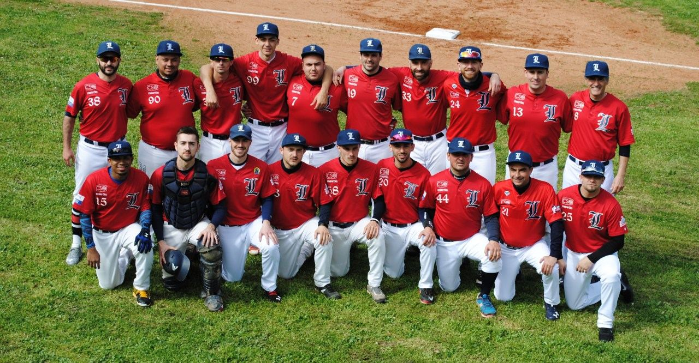
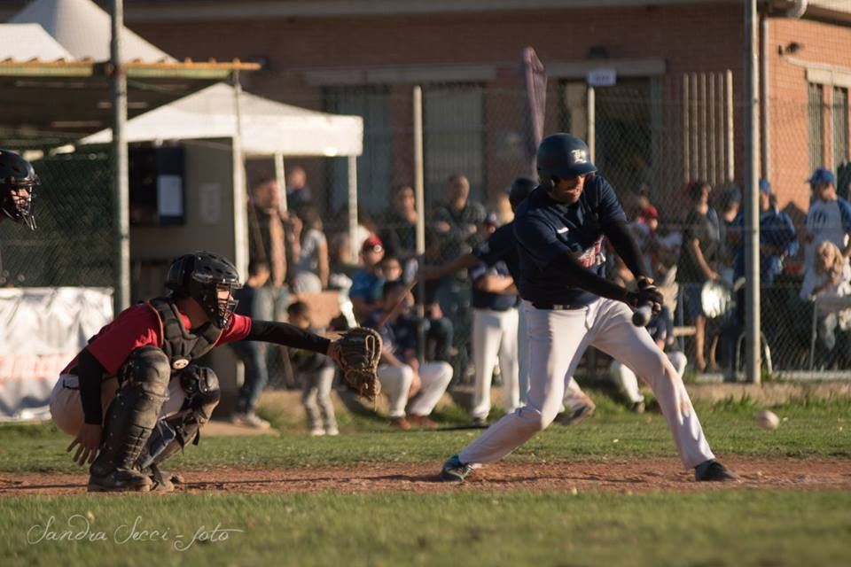

Ottimo Opening Day per i Lancers Baseball militanti in Serie B, la squadra di Rosellini & C. infatti è tornata dalla insidiosa trasferta di Ancona a bottino pieno.
Gara 1 termina con il punteggio di 10 a 2 a favore dei bianco/blu, dopo 7 inning di sostanziale equilibrio la partita ha trovato la svolta all’ottava ripresa con 9 punti messi a segno dal lineup lastrigiano sui rilievi avversari.
Partente dell’incontro Menoni che ha tenuto a dovere le mazze marchigiane per quattro inning dovendo scendere solamente per il numero di lanci limite imposto dalle regole per gli atleti Under 18, da segnalare anche la bella prestazione del pitcher partente avversario.
L’attacco è partito un po’ a rilento, anche a causa di una pre season corta causa maltempo, ma una volta trovate le misure ha espresso buone cose, ne è un esempio la bella prestazione del giovane Becattini con un 5/5.
Esordio ufficiale di Degl’Innocenti sul monte come rilievo lungo, ottima la prestazione in questo ruolo inedito che ha chiuso senza complicazioni la partita supportato da azioni difensive di buon livello.
La gara pomeridiana si sblocca subito al primo inning, il giovane lanciatore dell’Ancona, accademista assieme al nostro Menoni, ha difficoltà a trovare la zona di strike e concede 3 punti ai Lancers al primo attacco.
Sul monte di lancio lo staff schiera Morese, buona la gara del pitcher italo-venezuelano che nelle sette riprese lanciate subisce un solo punto.
La gara termina 11 a 1, i punti arrivano anche al quarto (2), settimo (1), ottavo (3) e nell’ultimo attacco (2); poche le battute valide (solamente 5 totali) e troppi gli errori difensivi commessi ma i Lancers sfruttano a dovere le imperfezioni della squadra avversaria; sicuramente una gara che, con maggiore cinismo, i lastrigiani avrebbero dovuto archiviare prima.
In conclusione si registrano 23 punti segnati e solamente 3 subiti, un segnalo positivo per lo staff tecnico che da lunedì mattina sta già preparando la partita casalinga di domenica 15 contro il Porto Sant’Elpidio, reduce da una doppia sconfitta a Rimini.
RISULTATI GIRONE C – TABELLINO GARA 1 – TABELLINO GARA 2
ALTRI RISULTATI

La gara del sabato degli Under 15 termina nettamente a favore del Grosseto White Dragons con il punteggio di 19 a 4, gli Under 12 vendicano i compagni maggiori vincendo in trasferta a Grosseto contro i Wild Rabbits con un perentorio 13 a 2.
L’esordio vincente dei giovani in Serie C sfuma all’ultima ripresa dopo una gara sempre in vantaggio, il tabellone segna 9 a 8 a favore del Perugia che ha dovuto lottare fino all’ultimo out per conquistare la vittoria dell’Opening Day.